Учебное заведение: Саратовский государственнный технический университет Гагарина Ю.А
Дисциплина: Методы обработки сигналов и изображений
Выполнил(а): Карпов Егор Дмитриевич
Группа: М1-ИФСТ-22
Преподаватель: Пиминов Д.А.
Город: Саратов /n
Год: 2026
Изучить представление растровых данных, цветовые модели, яркостные и морфологические преобразования, выделение границ и признаков, сравнение изображений и обработку видео. Разработать GUI-приложение и проверить его на воспроизводимых данных.
Растровое изображение представляет собой прямоугольную сетку пикселей. Глубина цвета — число бит, выделяемых для представления цвета одного пикселя. Следует отличать бит/пиксель от бит/канал: RGB с 8 битами на канал имеет глубину 24 бита/пиксель. При b битах возможно до 2^b различных кодов. В индексированном изображении код обозначает элемент палитры; в RGBA часть битов описывает прозрачность, а не дополнительные цвета.
Для RGB число возможных цветов равно 2^(bR+bG+bB). Объём несжатых данных без служебных полей приблизительно равен W·H·b/8 байт. Размер файла дополнительно зависит от сжатия, палитры, метаданных и структуры изображения.
Скриптом python tools/make_examples.py создан исходный рисунок 384×256: плавные цветовые переходы, геометрические фигуры и текст. Из одного оригинала получены шесть PNG. Данные ниже измерены программно, полный протокол — examples/depth_analysis.csv. MSE рассчитана по декодированным RGB-компонентам относительно исходника: MSE = Σ(I−J)²/(3WH).
Чем больше бит выделено на пиксель, тем шире палитра и плавнее переходы между оттенками. Количество цветов рассчитывается по формуле N = 2^i, где i — это количество бит на пиксель. Например:
1 бит на пиксель даёт 2 цвета (чёрный и белый).
8 бит на пиксель позволяет отобразить 256 оттенков серого или 16,7 миллиона цветов в RGB-модели (по 8 бит на каждый из трёх каналов: красный, зелёный, синий).
10 бит на пиксель (или 10 бит на канал) — уже 1024 оттенка на канал, что даёт около 1 миллиарда цветов.
| Представление | Бит/пиксель | Размер файла, байт | Различных RGB-цветов | MSE (среднеквадратичная ошибка) |
|---|---|---|---|---|
| Бинарное, порог 128 | 1 | 769 | 2 | 12147,390 |
| Индексированное, 16 цветов | 4 | 2507 | 16 | 378,658 |
| Оттенки серого | 8 | 6196 | 256 | 3506,542 |
| Индексированное, до 256 цветов | 8 | 7232 | 251 | 13,059 |
| RGB | 24 | 6006 | 58210 | 0 |
| RGBA, непрозрачный альфа-канал | 32 | 6599 | 58210 | 0 |
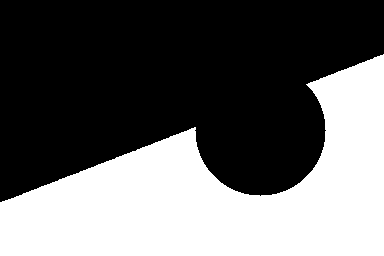
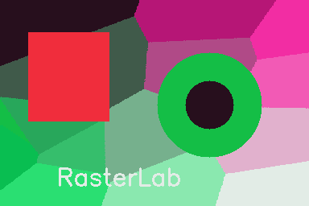
Выводы. При 1 бите теряются цвет и плавные переходы; сохраняется грубая структура. Палитра из 16 цветов создаёт заметные ступени на градиентах. 8-битная палитра существенно уменьшает ошибку. 8-битное серое изображение передаёт яркость, но полностью теряет информацию о цветности. RGB сохраняет оригинал. Непрозрачный альфа-канал увеличивает глубину до 32 бит, но не количество наблюдаемых цветов. В эксперименте 24-битный PNG меньше 8-битного палитрового: глубина не определяет размер сжатого файла однозначно. MSE между цветным и серым вариантами отражает также удаление цвета, поэтому не является универсальной оценкой визуального качества.
Любой перевод между поддерживаемыми моделями выполняется через RGB: A → RGB → B. Ниже RGB означает sRGB-компоненты с нелинейным кодированием, если явно не указано линейное RGB. Для формул HSL, HSV и CMYK принимаем r=R/255, g=G/255, b=B/255. Вычисления выполняются с плавающей точкой; ограничения диапазона и округление применяются в конце.
RGB — аддитивная модель: красный, зелёный, синий(Цвета создаются путём сложения световых волн: чем больше света, тем ярче.).
CMYK — субтрактивная модель печати: голубой, пурпурный, жёлтый, чёрный(Здесь цвета формируются за счёт поглощения (вычитания) света красками на белой бумаге. Чем больше краски наносится, тем темнее цвет. Белый — это отсутствие краски (белая бумага), а чёрный цвет в CMYK — отдельная чёрная краска (Key), потому что смешение CMY даёт грязный оттенок).
- K(значение черного ключа) = 1 − max(r,g,b).
- При K < 1: C = (1−r−K)/(1−K), M = (1−g−K)/(1−K), Y = (1−b−K)/(1−K).
- При K = 1(цвет черный): C=M=Y=0, K=1.
- Обратно: r=(1−C)(1−K), g=(1−M)(1−K), b=(1−Y)(1−K).
В интерфейсе CMYK показан в процентах. Это учебное приближение; реальное преобразование для печати зависит от бумаги, красок, чёрной генерации и ICC-профилей.
Обе модели используют тон H(HUE -(от 0 до 360°, где 0° — красный)),
насыщенность S(Saturation насыщенность (от 0% до 100%, где 100% — чистый цвет).)
и компоненту светлоты L(Lightness (L) — светлота (от 0% до 100%, где 0% — чёрный, 50% — нейтральный цвет, 100% — белый).)
либо значения VValue (V) — яркость (от 0% до 100%, где 100% — максимальная яркость).
В HSV при Value = 100% цвет становится белым, а не остаётся насыщенным.
Обозначим M=max(r,g,b), m=min(r,g,b), Δ=M−m.
- При Δ=0: H=0 по соглашению; фактически тон ахроматического цвета не определён.
- Если M=r: H=60·(((g−b)/Δ) mod 6). Максимальное значение — это красный канал. Разность (g − b) показывает отличие зелёного от синего. Деление на Δ (размах) нормализует эту разницу, а операция mod 6 обеспечивает результат в диапазоне [0, 6), что удобно для цветового круга. умножение на 60 переводит тон в градусы
- Если M=g: H=60·((b−r)/Δ+2). доминирует зелёный канал. Разность (b − r) показывает отличие синего от красного. Добавление 2 и умножение на 60 корректирует положение в цветовом круге.
- Если M=b: H=60·((r−g)/Δ+4). синий канал. Разность (r − g) показывает отличие красного от синего. Добавление 4 и умножение на 60 завершает настройку положения в цветовом пространстве.
Для HSV:
- V=M. V = M. Здесь V — это Value (яркость), а M — максимальное значение из трёх цветовых каналов RGB (R', G', B'). То есть V показывает, насколько ярким является цвет.
- S=0 при M=0; иначе S=Δ/M. Это формула для Saturation (насыщенности).
- Δ (дельта) — это разница между максимальным (M) и минимальным значением среди трёх каналов: Δ = max – min. Она показывает, насколько сильно цвета в этой точке отличаются по тону.
Если максимальное значение (M) равно нулю, это значит, что все три канала равны нулю. В таком случае цвет воспринимается как серый (или его оттенки — белый/чёрный в зависимости от яркости V). Поэтому насыщенность логично принять за ноль.
Если M не ноль, то насыщенность вычисляется как отношение разницы тонов (Δ) к максимальному значению (M). Так цвет нормализуется, и значение S лежит в диапазоне от 0 до 1 (или в процентах — от 0% до 100%).
Для HSL:
- L=(M+m)/2. Светлота Здесь max и min — максимальное и минимальное значения из трёх цветовых каналов (например, R, G, B в модели RGB), а L представляет собой среднее арифметическое этих двух значений, то есть среднюю яркость цвета. Значение L лежит в диапазоне от 0 (чёрный) до 1 (белый).
- S=0 при Δ=0; иначе S=Δ/(1−|2L−1|). насыщенность Случай Δ = 0. Если разница между максимальным и минимальным значением каналов равна нулю, это означает, что все три канала имеют одинаковое значение. Такой цвет является ахроматическим (серым, белым или чёрным), и его насыщенность по определению равна нулю.
Расчёт при Δ ≠ 0. Формула для S зависит от значения L:
Если L ≤ 0.5, то S = Δ / (max + min).
Если L > 0.5, то S = Δ / (2 − max − min).
В интерфейсе H выражается в градусах [0,360], S,L,V — в процентах. H=360 эквивалентен H=0.
Для HSV: C=V·S вычисляется цветность, m₀=V−C - смещение.
Для HSL: C=(1−|2L−1|)·S - цветность, m₀=L−C/2 - смещение.
В обоих случаях h=(H mod 360)/60, X=C·(1−|h mod 2−1|). Выбирается промежуточная тройка:
| Интервал h | (r′,g′,b′) |
|---|---|
| [0,1) | (C,X,0) |
| [1,2) | (X,C,0) |
| [2,3) | (0,C,X) |
| [3,4) | (0,X,C) |
| [4,5) | (X,0,C) |
| [5,6) | (C,0,X) |
Затем (r,g,b)=(r′+m₀,g′+m₀,b′+m₀), (R,G,B)=255·(r,g,b).
CIELAB описывает светлоту L*, зелёно-красную ось a* и сине-жёлтую ось b*. Используются белая точка D65, наблюдатель 2°. Это приблизительно перцептивно равномерная модель.
1. Линеаризация каждого нормированного sRGB-компонента u:
u_lin = u/12,92 при u≤0,04045; иначе u_lin=((u+0,055)/1,055)^2,4.
2. Переход в XYZ:
[X] [0.4124564 0.3575761 0.1804375] [r_lin]
[Y] = [0.2126729 0.7151522 0.0721750] [g_lin]
[Z] [0.0193339 0.1191920 0.9503041] [b_lin]
3. Нормировка на белую точку (Xn,Yn,Zn)=(0,95047;1;1,08883). убираем «нейтральный» цвет Смысл операции X/Xn, Y/Yn, Z/Zn: белый цвет монитора (D65) должен в Lab дать ровно L* = 100, a* = b* = 0. Нормировка сдвигает всю систему так, чтобы эталонный белый оказался в точке (1; 1; 1).
в темноте мы различаем оттенки гораздо лучше, чем на ярком свету (закон Стивенса, показатель ≈ 1/3).
4. δ=6/29. f(t)=t^(1/3) при t>δ³; иначе f(t)=t/(3δ²)+4/29.
L*=116f(Y/Yn)−16;
a*=500[f(X/Xn)−f(Y/Yn)];
b*=200[f(Y/Yn)−f(Z/Zn)].
4. Обратное преобразование:
fy=(L*+16)/116, fx=fy+a*/500, fz=fy−b*/200.
f⁻¹(q)=q³ при q>δ; иначе f⁻¹(q)=3δ²(q−4/29).
(X,Y,Z)=(Xn·f⁻¹(fx), Yn·f⁻¹(fy), Zn·f⁻¹(fz)).
5. Обратно в линейное RGB:
[r_lin] [ 3.2404542 -1.5371385 -0.4985314] [X]
[g_lin] = [-0.9692660 1.8760108 0.0415560] [Y]
[b_lin] [ 0.0556434 -0.2040259 1.0572252] [Z]
6. Кодирование sRGB: u=12,92u_lin при u_lin≤0,0031308; иначе u=1,055u_lin^(1/2,4)−0,055. Результат ограничивается [0,1] и умножается на 255.
Некоторые цвета Lab лежат вне охвата sRGB: после ограничения обратное преобразование необратимо. В программе L* задаётся в [0,100], a*,b* — в распространённом учебном диапазоне [−128,127]; теоретически Lab не ограничен этим диапазоном a*,b*. Внутри вычислений используются действительные значения Lab, а не кодировка OpenCV Lab uint8.
Lab описывает почти все видимые человеком цвета, а sRGB — маленький треугольник внутри видимой области. Значит, существуют корректные Lab-цвета, у которых обратное преобразование даёт линейный RGB, скажем, 1,3 или −0,2 — такого цвета на экране просто нет.
Зажим в [0, 1] — вынужденная мера, и он необратим: прокрутив зажатый RGB обратно в Lab, вы получите другой (менее насыщенный) цвет. Практический приём, если это критично: не зажимать каналы по отдельности, а уменьшать насыщенность в самом Lab (сжимать a*, b* к нулю при сохранении L* и оттенка), пока цвет не влезет в охват целиком.
Y — сигнал яркости (luma), Cb и Cr — цветоразностные компоненты. Используется полноразмаховый вариант BT.601 для RGB 0…255, без видеодиапазона 16…235:
Y = 0.299000R + 0.587000G + 0.114000B
Cb = -0.168736R - 0.331264G + 0.500000B + 128
Cr = 0.500000R - 0.418688G - 0.081312B + 128
R ≈ Y + 1.402000(Cr-128)
G ≈ Y - 0.344136(Cb-128) - 0.714136(Cr-128)
B ≈ Y + 1.772000(Cb-128)
Программа использует обратную матрицу для согласованности коэффициентов. Компоненты ограничиваются диапазоном [0,255]. На крайних насыщенных цветах формула может дать 255,5; ограничение до 255 приводит к небольшой потере точности (менее единицы RGB в проверенных контрольных примерах). YCbCr не тождественна аналоговой YUV. Y также не является физической линейной яркостью.
Яркостные преобразования — изменение интенсивностей пикселей по функции s=T(r), глобально одинаковой либо зависящей от локальной области. Они используются для улучшения видимости деталей, коррекции экспозиции и контраста.
- Смещение яркости: s=clip(r+β).
- Контраст относительно центра: s=clip(α(r−127,5)+127,5).
- Линейное растяжение диапазона: s=255(r−r_min)/(r_max−r_min). Постоянное изображение требует отдельной обработки; в программе сохраняется без изменения.
- Инверсия: s=255−r.
- Гамма-коррекция: s=255(r/255)^γ. В этой договорённости γ<1 осветляет, γ>1 затемняет.
- Логарифмическое преобразование: s=255·ln(1+r)/ln(256), расширяет тёмные значения.
- Пороговое преобразование: два уровня по сравнению с порогом.
- Эквализация: s≈255·CDF(r), перераспределяет уровни по накопленной гистограмме.
- Локальная эквализация CLAHE обрабатывает отдельные области с ограничением усиления контраста.
Изменение насыщенности — цветовое, а не чисто яркостное преобразование: в приложении S′=clip(kS) в HSV. Для серого изображения насыщенность остаётся нулевой.
Гистограмма h(k) — количество пикселей, имеющих уровень k; нормированная p(k)=h(k)/(WH) описывает частоты. Для RGB строятся три распределения. По гистограмме можно оценить преобладание теней/светов, используемый динамический диапазон, контраст, насыщение значений на 0 и 255, возможное разделение фона и объектов.
Гистограмма не содержит координат: перестановка пикселей не меняет её. Одинаковые гистограммы не гарантируют одинаковое содержание. В приложении гистограммы до и после показываются с общей вертикальной шкалой, чтобы сравнение было корректным; доступны отдельные R/G/B и яркость.
Морфология анализирует форму объектов с помощью структурирующего элемента B. Для бинарного изображения белый цвет означает объект, чёрный — фон.
- Эрозия A⊖B: пиксель сохраняется, если структурирующий элемент полностью помещается в объект. Уменьшает объекты, удаляет мелкие белые точки, разрывает тонкие соединения. Для серого изображения это локальный минимум.
- Дилатация A⊕B: пиксель становится белым при пересечении элемента с объектом. Расширяет объекты, соединяет близкие фрагменты. Для серого изображения это локальный максимум.
- Открытие (A⊖B)⊕B: эрозия, затем дилатация. Удаляет мелкие светлые детали и выступы.
- Закрытие (A⊕B)⊖B: дилатация, затем эрозия. Заполняет небольшие тёмные отверстия и щели.
- Морфологический градиент: dilation(A)−erosion(A), подчёркивает границы.
- Белый top-hat: A−opening(A), выделяет мелкие светлые детали.
- Чёрный top-hat: closing(A)−A, выделяет мелкие тёмные детали.
- Hit-or-miss: поиск заданного сочетания переднего плана и фона.
- Утоньшение и скелетизация: получение тонкой структуры, приближённо сохраняющей топологию.
- Реконструкция: распространение маркера внутри маски; позволяет избирательно восстанавливать связанные области.
Применение: очистка масок после бинаризации и вычитания фона, подготовка документов к OCR, разделение/объединение объектов, устранение отверстий, выделение границ. Размер и форма элемента должны соответствовать масштабу деталей: слишком большое ядро уничтожает полезные объекты. В приложении первые пять операций выполняются над серым изображением квадратным ядром; для бинарной морфологии сначала следует выполнить бинаризацию.
- Глобальный порог: B(x,y)=255 при I(x,y)>T, иначе 0. Подходит для равномерного освещения и хорошо разделимых уровней фона и объекта.
- Оцу: выбирает T, максимизирующий межклассовую дисперсию ω₀ω₁(μ₀−μ₁)². Хорошо работает при двух выраженных классах; чувствителен к неоднородному освещению.
- Адаптивный средний/гауссовский порог: T(x,y) равен среднему или взвешенному среднему в окрестности минус C. Подходит для теней и неравномерно освещённых документов.
- Ниблэк: T=m+kσ; Саувола: T=m[1+k(σ/R−1)]. Учитывают локальное среднее и стандартное отклонение, полезны для текста.
- Порог по модулю градиента: сначала вычисляется градиент, затем бинаризуется его величина.
- Двойной порог с гистерезисом: сильные границы принимаются сразу, слабые — только при связи с сильными. Используется в Canny.
Canny включает гауссовское сглаживание, вычисление градиента, подавление немаксимумов, двойной порог и гистерезис. Это детектор границ, а не просто пороговая бинаризация исходной яркости. Робертс оценивает градиент диагональными масками [[1,0],[0,−1]] и [[0,1],[−1,0]], затем вычисляет √(Gx²+Gy²); чувствителен к шуму.
Для замкнутых объектов бинаризация областей часто удобнее, чем тонкие границы Canny: последние могут быть разорваны и создавать двойные контуры.
Иерархия — отношение вложенности контуров. Внешний контур объекта является родительским для границы отверстия внутри него. Контуры одного уровня — соседи; отдельные внешние объекты обычно не имеют родителя.
Пример: белый диск с чёрным отверстием и белым островком внутри. Внешняя граница диска → граница отверстия → граница островка: три уровня вложенности. У буквы «О» внешний контур родительский, внутренний — дочерний. У буквы «В» два отверстия являются дочерними контурами одной внешней границы.
В OpenCV RETR_TREE сохраняет полное дерево, RETR_EXTERNAL — только внешние границы, RETR_LIST — список без вложенности, RETR_CCOMP — двухуровневую структуру. Для каждого контура хранится [next, previous, first_child, parent], отсутствие связи обозначается −1.
Для диска с отверстием, островком и отдельным объектом допустима такая схема (индексы условны):
0: [ 3, -1, 1, -1] — внешний диск
1: [-1, -1, 2, 0] — отверстие
2: [-1, -1, -1, 1] — островок
3: [-1, 0, -1, -1] — отдельный объект
Локальный дескриптор — числовое описание окрестности ключевой точки, пригодное для сравнения соответствующих участков разных изображений. Детектор находит точки, дескриптор описывает их. Эти понятия следует различать.
| Метод | Принцип | Свойства и отличия |
|---|---|---|
| SIFT | Экстремумы разности гауссианов в масштабном пространстве, ориентация по градиентам, дескриптор 4×4 ячейки × 8 направлений = 128 компонент | Устойчив к масштабу и вращению, сравнительно устойчив к освещению, вычислительно затратен |
| SURF | Детектор на приближённом определителе Гессиана, интегральные изображения, отклики Хаара | Обычно 64 компоненты, расширенный вариант 128; рассчитан на ускорение, устойчив к масштабу и вращению; доступность зависит от сборки OpenCV |
| FAST | На окружности из 16 пикселей ищет непрерывную дугу пикселей заметно светлее/темнее центра | Очень быстрый угловой детектор; сам по себе не является дескриптором, не обеспечивает масштабную инвариантность; часто сочетается с BRIEF/ORB |
Дополнительно детектор Харриса использует матрицу вторых моментов градиентов и отклик R=det(M)−k·trace(M)²: большой положительный отклик соответствует углу. Устойчив к повороту, но не к изменению масштаба без дополнительных механизмов.
Приложение реализует три разрешённых детектора: Харрис, SIFT, FAST. Для задания достаточно отображения ключевых точек; вычисление SIFT-дескрипторов для их последующего сопоставления не требуется.
| Задача | Пример | Методы |
|---|---|---|
| Выделение движения | Обнаружение человека неподвижной камерой | Разность кадров, MOG2, KNN, оптический поток |
| Детекция объектов | Автомобили на дороге | YOLO, SSD, Faster R-CNN |
| Сопровождение | Траектория автомобиля | Калман + ассоциация, SORT/DeepSORT, KLT |
| Оценка движения | Смещение объектов и камеры | Lucas–Kanade, Farnebäck, RAFT |
| Стабилизация | Устранение дрожания | Сопоставление признаков, RANSAC, сглаживание траектории |
| Сегментация | Маска человека | Фоновое вычитание, нейросетевые сегментаторы |
| Распознавание действий | Падение, жесты | Признаки позы, 3D CNN, временные трансформеры |
| Подсчёт и события | Пересечение линии | Детекция + трекинг + геометрические правила |
| Монтажные переходы | Разделение ролика на сцены | Разность гистограмм и визуальных признаков |
| Избирательная обработка | Размытие движущегося объекта | Маска движения + морфология + гауссов фильтр |
В работе используется MOG2: распределение интенсивностей каждого пикселя моделируется смесью гауссиан. Новые значения сравниваются с моделью, фон обновляется со временем. Маска теней отбрасывается порогом >200, шум очищается открытием и закрытием. Для размытия маска расширяется и внутри неё подставляется сглаженный кадр.
Ограничения: первые кадры нужны для обучения; неподвижный объект со временем может стать фоном; движение камеры и резкие изменения освещения ухудшают результат. Маска движения не равнозначна распознаванию полного объекта, поэтому размытие не гарантирует сокрытия всего объекта.
Название: RasterLab. Язык: Python 3.10+. GUI: Tkinter/ttk. Обработка: OpenCV, NumPy, Pillow.
Проект разделён на слои. Зависимости направлены строго вниз: ui → services → core. Ядро не зависит от GUI и файловой системы; сервисы не зависят от Tkinter; интерфейс не содержит алгоритмов обработки. Модули rasterlab/* в корне проекта — тонкие facade-обёртки, сохраняющие совместимость исходных импортов.
main.py — точка входа
src/rasterlab/
core/
colors.py — шесть цветовых моделей, переводы
image.py — фильтры, коррекция, гистограммы
features.py — поиск похожих изображений
video.py — FrameProcessor: маска движения и размытие
services/
files.py — чтение/запись файлов и метаданных
video.py — VideoSession: жизненный цикл видео
ui/
app.py — главное окно, связи между вкладками
model.py — состояние изображения и история шага
histogram.py — отрисовка гистограмм
widgets.py — диалоги и переиспользуемые виджеты
image_view.py — масштабируемый просмотр массива
tabs/ — image, color, compare, video
rasterlab/ — facade для обратной совместимости
tools/ — генерация примеров, проверка GUI, сборка отчёта
tests/ — модульные проверки
examples/ — входные данные и иллюстрации
Запуск из папки проекта:
python -m venv .venv
.venv\Scripts\python -m pip install -r requirements.txt
.venv\Scripts\python main.py
Tkinter входит в стандартный установщик Python для Windows. В Linux может потребоваться пакет python3-tk. Установка opencv-contrib-python для выбранных трёх детекторов не требуется.
| Требование | Реализация и способ использования |
|---|---|
| Загрузка и отображение | «Изображение → Открыть»; масштабирование для просмотра с сохранением пропорций |
| Информация о файле | Путь, размер в байтах, разрешение, исходная глубина, формат, режим, DPI, число кадров, наличие ICC |
| Шесть цветовых моделей | Вкладка «Цвет пикселя»: RGB, CMYK, HSL, LAB, HSV, YCbCr; ввод любой модели → все модели |
| Выбор пикселя | Клик по исходному/результирующему изображению с пересчётом координат просмотра |
| Серое изображение | Фильтр «Градации серого», Y≈0,299R+0,587G+0,114B |
| Яркость, контраст, насыщенность | Три регулятора и «Применить» |
| Гистограммы | До/после, совместные RGB или отдельные каналы, яркость, логарифмическая шкала |
| Линейная коррекция | Растяжение диапазона серого изображения |
| Нелинейная коррекция | Гамма, логарифмическая коррекция, эквализация |
| Морфология | Эрозия, дилатация, открытие, закрытие, градиент; настраиваемое ядро |
| Резкость | Нерезкая маска: 1,8I−0,8Gaussian(I) |
| Размытие в движении | Нормированное линейное ядро заданной длины и угла |
| Тиснение | Направленная свёртка и добавление 128 |
| Медианная фильтрация | Медиана в нечётной окрестности |
| Canny | Сглаживание, два настраиваемых порога |
| Робертс | Две диагональные производные и модуль градиента |
| Три детектора | Харрис, SIFT, FAST; отрисовка точек и их количество |
| Похожие изображения | Загрузка 3–10 файлов; перебор всех пар; вывод двух лучших |
| Вычитание фона | «Видео → Открыть видео → Вычитание фона», MOG2 |
| Размытие движущихся объектов | Режим «Размытие объектов» на вкладке видео |
| Дополнительные функции | Сохранение, отмена шага, сброс, бинаризация, контуры и их иерархия |
Все фильтры применяются к текущему результату. Слева показывается состояние до последней операции, справа — после. Для независимого сравнения фильтров следует нажимать «Сбросить». Регуляторы после применения возвращаются к нейтральным значениям. «Отменить шаг» хранит один предыдущий результат.
Рабочее изображение — RGB uint8. EXIF-ориентация учитывается, прозрачность компонуется на белом фоне. 16-битный серый PNG/TIFF приводится делением на 257 к 8 битам. Для остальных специализированных режимов действует преобразование Pillow в RGB. Глубина файла и рабочего массива показываются раздельно. ICC-профиль обнаруживается, но управление цветом по профилям не выполняется. Для многокадровых изображений обрабатывается первый кадр. Сохранение результата не переносит исходные метаданные.
Для каждого изображения рассчитываются:
1. Нормированная двумерная гистограмма H/S размером 32×32.
2. Перцептивный хеш: серое изображение 32×32 → DCT → низкочастотный блок 8×8 без DC-компоненты → сравнение 63 коэффициентов с медианой.
Расстояние цвета: dH=√max(0,1−Σ√(pᵢqᵢ)).
Расстояние структуры: dP=число различных битов/63.
Итог: d=0,5dH+0,5dP.
Перебираются n(n−1)/2 пар, выбирается минимальное d. При равенстве выбирается первая пара. Это эвристика визуального сходства, не вероятность и не семантическое распознавание. Нулевое расстояние означает совпадение признаков, а не обязательно пикселей. Тест с дубликатом проверяет, что идентичная пара выбирается вместо непохожего изображения.
Все изображения ниже получены функциями обработки приложения; это результаты алгоритмов, а не снимки интерфейса. Исходные данные и параметры воспроизводятся скриптом tools/make_examples.py: ядро 5, γ=1,5, Canny 50/150.
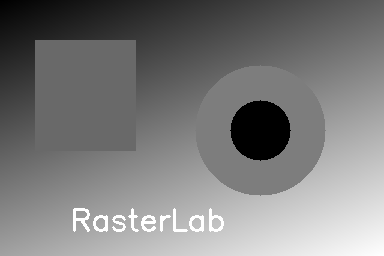
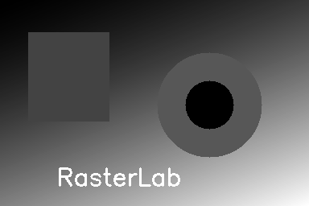
Гамма 1,5 затемняет средние тона. Полная цветовая информация при преобразовании в серый теряется, но форма объектов сохраняется.
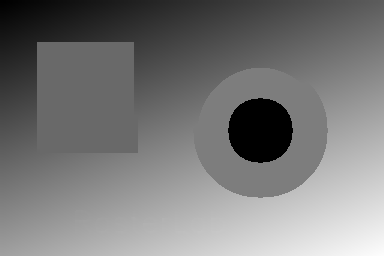
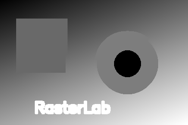
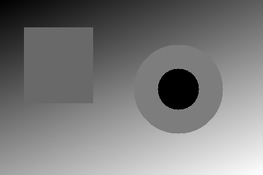
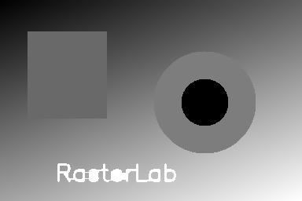
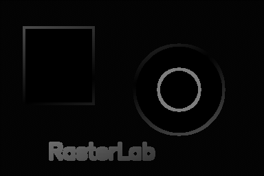
Эрозия сужает светлые области, дилатация расширяет их. Открытие подавляет мелкие светлые детали, закрытие — тёмные. Градиент выделяет переходы интенсивности.
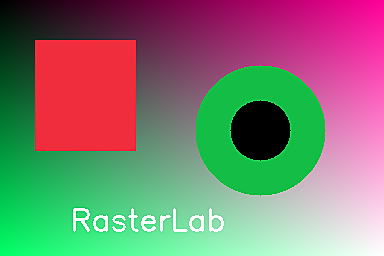
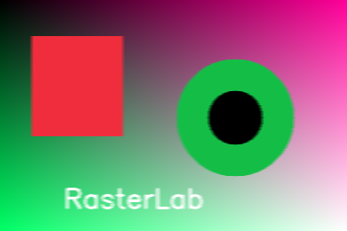
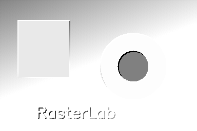
Резкость повышает локальный контраст на переходах, но может усиливать шум. Линейное ядро имитирует смазывание вдоль направления движения. Тиснение подчёркивает направленные перепады. Медианный фильтр подавляет импульсные выбросы и может удалять тонкие детали.
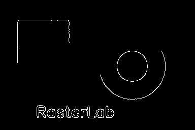
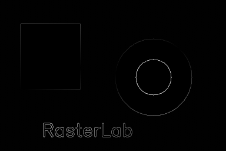
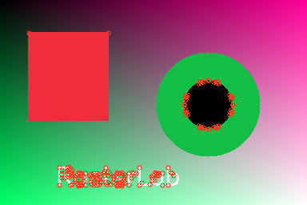
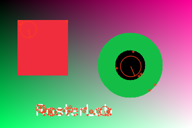
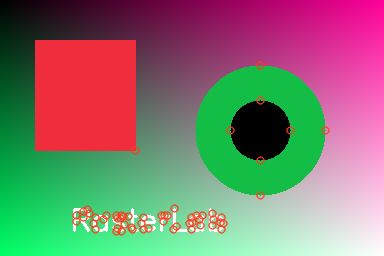
Canny даёт тонкие границы после подавления немаксимумов; Робертс отображает величину диагональных перепадов. Ключевые точки концентрируются на углах, тексте и характерных деталях.
Для демонстрации создан examples/motion.avi: 150 кадров, 25 FPS, 384×256, первые 40 кадров — фон, затем движется полосатый прямоугольник. Ниже показаны исходный кадр №91 и результаты потоковой обработки исходных кадров до сжатия AVI.
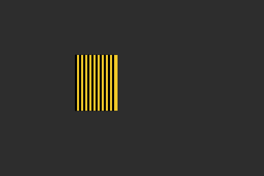
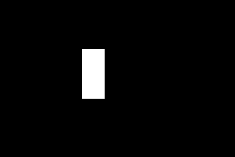
Объект выделяется маской, структура полос внутри движущейся области сглаживается. Отдалённый неподвижный фон сохраняется.
1. Открыть examples/depth_24.png, проверить разрешение 384×256 и глубину 24 бит.
2. По очереди открыть варианты depth_*, сравнить глубину и размер файла.
3. Кликнуть по изображению; проверить координаты и переводы RGB в остальные модели. Ввести вручную, например, HSV=(0,100,100): RGB должен быть (255,0,0).
4. На вкладке изображения изменить яркость, контраст и насыщенность. Нажать «Применить», сравнить обе гистограммы и переключить R/G/B.
5. Проверить серое изображение, линейную и нелинейную коррекцию. Для независимого опыта каждый раз сбрасывать результат.
6. Выполнить все пять морфологических операций, фильтры резкости, движения, тиснения, медианы, Canny, Робертса.
7. Выполнить Харрис, SIFT, FAST; проверить наложение и число точек.
8. Выполнить «Контуры»; изучить дерево в отдельном окне.
9. Выбрать depth_24.png, similar.png, different.png на вкладке сравнения. Изучить лучшую пару и расстояние.
10. Открыть motion.avi, дождаться появления объекта, переключить маску/размытие; проверить паузу и запуск с начала.
11. Сохранить результат в PNG и повторно открыть его.
Команда: python -m unittest discover -s tests -v.
Автоматические проверки охватывают контрольные значения цветов, обратимость моделей с учётом ограничения YCbCr, отклонение неверного ввода, исполнение всех операций, изменение площади при эрозии/дилатации, сумму гистограмм, отсутствие переполнения при яркостном сдвиге, направление гамма-коррекции, выбор дубликатов, метаданные PNG разной глубины, Unicode-пути, выделение движущегося объекта и сохранение удалённого фона при размытии. Отдельный файл проверяет сервисный слой: чтение/запись, изменение размера превью, конец видеопотока и перезапуск, историю изображения и выбор канала гистограммы.
Результат выполненного прогона: 15 тестов, все пройдены. Среда: Windows, Python 3.12.10, OpenCV 4.12.0, NumPy 1.26.4, Pillow 10.3.0.
Дополнительно python tools/check_gui.py проверяет реальное окно Tkinter: загрузку изображения, выбор пикселя, яркостное преобразование и отмену, Canny и гистограммы, сохранение PNG, поиск пары, декодирование и обработку всех 150 кадров AVI, конец видео и перезапуск. Проверка пройдена.
Разработано приложение, реализующее обе практические группы задач: обработку растровых изображений и анализ движения в видео. Эксперимент показывает различие между глубиной кодирования, фактическим числом цветов и размером сжатого файла. Рассмотрены преобразования шести цветовых моделей, методы коррекции, морфология, контуры и локальные признаки. Реализованы воспроизводимые примеры и автоматические проверки вычислительной части.
1. OpenCV: документация обработки изображений — https://docs.opencv.org/4.x/d7/dbd/group__imgproc.html
2. OpenCV: локальные признаки — https://docs.opencv.org/4.x/da/d9b/group__features2d.html
3. OpenCV: вычитание фона — https://docs.opencv.org/4.x/d1/dc5/tutorial_background_subtraction.html
4. Pillow: режимы изображений — https://pillow.readthedocs.io/en/stable/handbook/concepts.html
5. CSS Color 4: sRGB, Lab и преобразования — https://www.w3.org/TR/css-color-4/
6. Lowe D. G. Distinctive Image Features from Scale-Invariant Keypoints. IJCV, 2004.
7. Bay H. et al. Speeded-Up Robust Features (SURF). CVIU, 2008.
8. Rosten E., Drummond T. Machine Learning for High-Speed Corner Detection. ECCV, 2006.